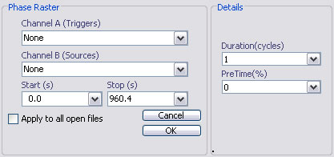

Email: sigtool@kcl.ac.uk
Author: Malcolm Lidierth
Updated: August 2008
Displays events as a function of the phase of a cycle. The trigger channel(s) provide the events that mark the start/stop times for the cycles.

Select the trigger channels in the Channel A selector. These mark the onset of the rhythm to analyze. Note that only valid triggers will be used to mark the onset of each cycle but that all physical events will be scanned to find the end of the cycle. If the rhythm is interupted, set those events which mark the onset of each complete cycle as valid. Thus, if there are 10 cycles but the 10th is interupted, mark 1-9 as valid using the Channels menu in the sigTOOL data view.
Choose source channels using the Channel B selector.
Sets the timebase for the resulting raster (in cycles)
Sets the pre-time as a percentage of the duration.
© The Author and King's College London, 2008-